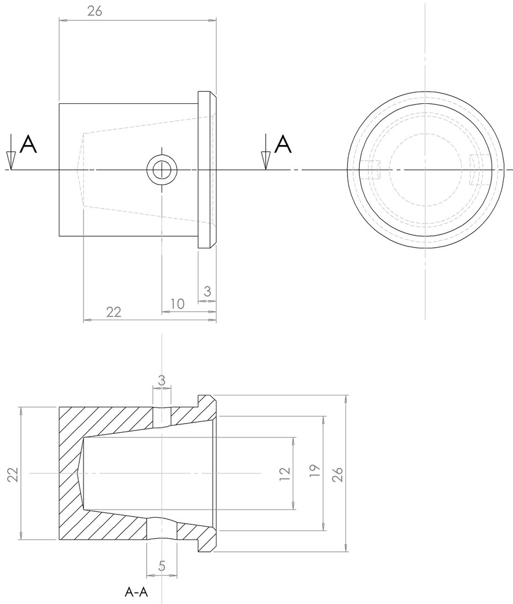
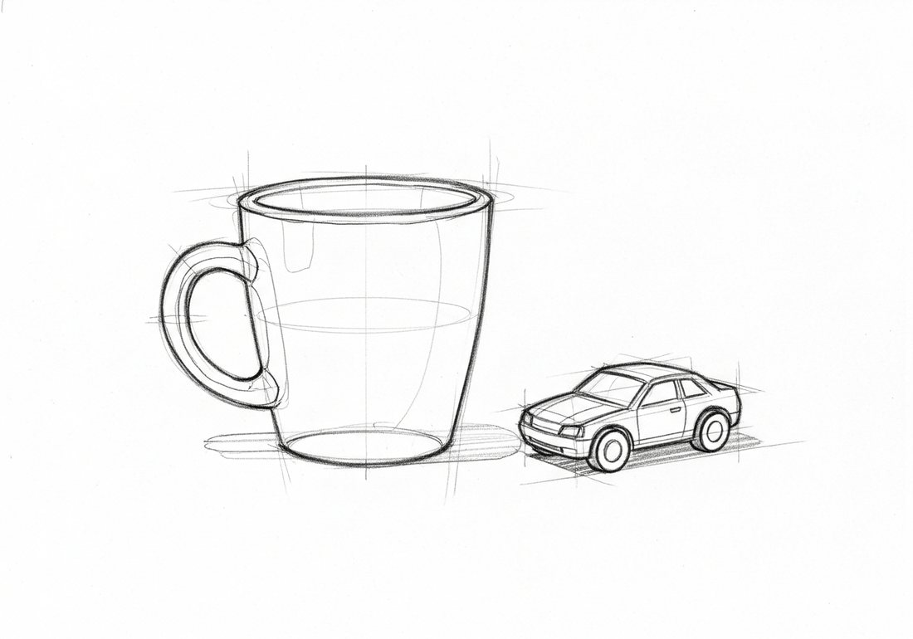
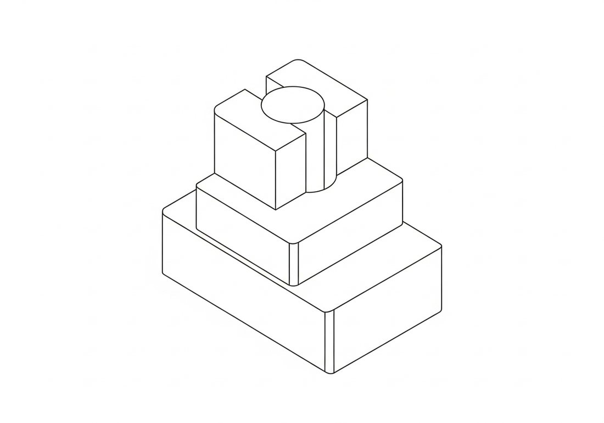
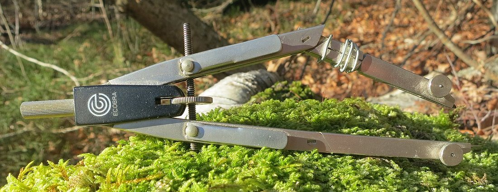
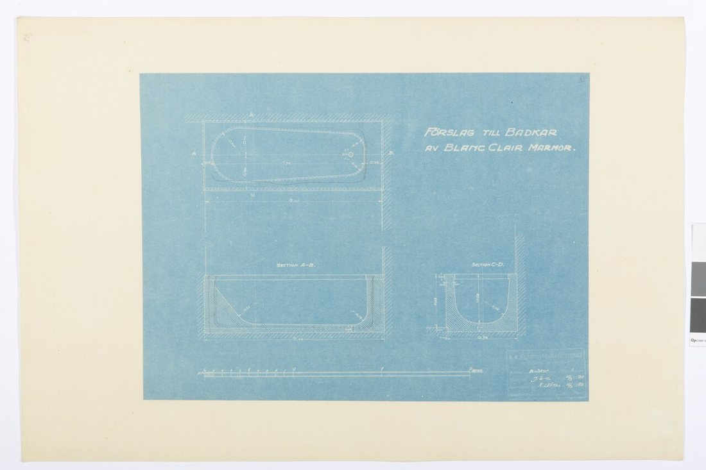

Көркем еңбек (ұлдар) · 1-бөлім · Графика және жобалау Art & Craft (Boys) · Section 1 · Graphics & Design Художественный труд (мальчики) · Раздел 1 · Графика и проектирование
Сызықтар мен пішіндердің тілі — идеяны қағазда дәл жеткізудің үш тәсілі. The language of lines and shapes — three ways to put an idea on paper precisely. Язык линий и форм — три способа точно изложить идею на бумаге.
Графика (грек. graphō — «жазамын, сызамын») — бұйымды нүкте, сызық пен пішін арқылы жазықтықта бейнелеу. Шеберге дейін кез келген зат алдымен қағазда туады. Инженер мен шебер бір-бірін сөзсіз түсінуі үшін графиканың ортақ ережелері — стандарттар (ҚР СТ, ЕСКД) бар. Бұл плакатта графикалық бейненің үш негізгі түрін салыстырамыз: сызба, эскиз және техникалық сурет. Graphics (Gr. graphō — “I write, I draw”) means depicting an object on a flat surface with dots, lines and shapes. Before a craftsman makes anything, the object is first born on paper. So that an engineer and a worker understand each other without words, graphics follows common rules — standards (such as GOST / ESKD). This poster compares the three main kinds of graphic image: the drawing, the sketch and the technical (pictorial) drawing. Графика (греч. graphō — «пишу, черчу») — это изображение предмета на плоскости с помощью точек, линий и форм. Прежде чем мастер что-то изготовит, изделие сначала рождается на бумаге. Чтобы инженер и рабочий понимали друг друга без слов, графика подчиняется общим правилам — стандартам (ГОСТ, ЕСКД). На этом плакате мы сравним три главных вида графического изображения: чертёж, эскиз и технический рисунок.
🔍 Үлкейту үшін кескінді басыңыз. 🔍 Tap an image to enlarge it. 🔍 Нажмите на изображение, чтобы увеличить.



| Признак | Чертёж | Эскиз | Технический рисунок |
|---|---|---|---|
| Инструменты | Циркуль, линейка, угольник | От руки, карандаш | От руки (можно с осями) |
| Масштаб | Точно соблюдён | Не соблюдается | Приблизительно |
| Размеры | Проставлены все | Иногда, на глаз | Обычно без размеров |
| Вид изображения | Плоские виды и разрезы | Любой, быстрый | Объёмный, наглядный |
| Когда применяют | Для изготовления изделия | Для быстрой записи идеи | Чтобы показать форму |
| Белгісі | Сызба | Эскиз | Техникалық сурет |
|---|---|---|---|
| Аспаптар | Циркуль, сызғыш, бұрыштық | Қолмен, қарындаш | Қолмен (осьтермен) |
| Масштаб | Дәл сақталады | Сақталмайды | Шамамен |
| Өлшемдер | Барлығы қойылады | Кейде, шамамен | Әдетте өлшемсіз |
| Бейне түрі | Жазық көріністер мен қималар | Кез келген, жылдам | Көлемді, көрнекі |
| Қолданылуы | Бұйымды дайындау үшін | Идеяны тез жазу үшін | Пішінді көрсету үшін |
| Feature | Drawing | Sketch | Technical drawing |
|---|---|---|---|
| Tools | Compass, ruler, set square | Freehand, pencil | Freehand (axes allowed) |
| Scale | Kept exactly | Not kept | Approximate |
| Dimensions | All marked | Sometimes, by eye | Usually none |
| Image type | Flat views & sections | Any, quick | 3-D, pictorial |
| Used for | Manufacturing the part | Capturing an idea fast | Showing the shape |

Сызбаны дәл салу үшін арнайы аспаптар қажет. Әрқайсысының өз міндеті бар: A precise drawing needs special instruments. Each one has its own job: Для точного чертежа нужны специальные инструменты. У каждого своя задача:
🧭 ЦиркульCompassЦиркуль
Шеңбер мен доғаларды салады.Draws circles and arcs.Чертит окружности и дуги.
📏 СызғышRulerЛинейка
Түзу сызықтар мен өлшем.Straight lines and length.Прямые линии и длина.
📐 БұрыштықSet squareУгольник
90°, 45°, 30°, 60° бұрыштар.90°, 45°, 30°, 60° angles.Углы 90°, 45°, 30°, 60°.
✏️ ҚарындашPencilКарандаш
Қатты (Т/H) — жұқа, жұмсақ (М/B) — қалың.Hard (H) — thin, soft (B) — bold.Твёрдый (Т/H) — тонко, мягкий (М/B) — жирно.
Әр сызықтың өз мағынасы бар. Түймені басып, сызықты сызбадан табыңыз. Every line has a meaning. Press a button and find the line on the drawing. Каждая линия имеет свой смысл. Нажмите кнопку и найдите линию на чертеже.
Бұйымның көрінетін контурын көрсетеді — ең қалың сызық.Shows the visible outline of the part — the thickest line.Показывает видимый контур изделия — самая толстая линия.
Симметрия осін немесе шеңбер центрін белгілейді.Marks the axis of symmetry or the centre of a circle.Обозначает ось симметрии или центр окружности.
Заттың ішіндегі, көзге көрінбейтін шеттерін көрсетеді.Shows edges hidden inside the object.Показывает невидимые, скрытые внутри рёбра.
Жұқа сызық пен бағдаршалар бойымен өлшем қойылады.Thin lines with arrows carry the dimension values.Тонкими линиями со стрелками наносят размеры.
Көшіру машиналары шыққанға дейін сызбаларды көк фонда ақ сызықпен көбейтетін — оны «синька» (blueprint) деп атаған. Мұнда нақты бұйымның — ваннаның — көрінісі, қимасы және өлшемдері берілген. Сызба тек сурет емес: ол шеберге арналған дәл нұсқаулық. Before copying machines, drawings were reproduced as white lines on a blue background — the famous blueprint. This one shows a real product — a bathtub — with its plan, sections and dimensions. A drawing is not just a picture: it is a precise instruction for the maker. До появления копировальных машин чертежи размножали как белые линии на синем фоне — это и есть знаменитая «синька» (blueprint). Здесь показано настоящее изделие — ванна — с её видом, разрезами и размерами. Чертёж — это не просто рисунок, а точная инструкция для мастера.

Форматты дайындауPrepare the sheetПодготовка листа
Парақты рамкамен, негізгі жазумен (штамп) және масштабпен дайындаймыз.Set up the sheet with a border, title block and chosen scale.Оформляем лист рамкой, основной надписью (штампом) и масштабом.
Орналастыру және осьтерLayout & axesКомпоновка и оси
Көріністерді параққа жеңіл сызықпен орналастырып, осьтерді жүргіземіз.Place the views with light lines and draw the centre axes.Тонкими линиями размещаем виды и проводим осевые линии.
Контурды салуDraw the outlineПостроение контура
Аспаптармен пішінді дәл саламыз: контур, көрінбейтін сызықтар.With instruments build the exact shape: outline and hidden lines.Инструментами точно строим форму: контур и невидимые линии.
Өлшем және рәсімдеуDimensions & finishingРазмеры и оформление
Өлшемдерді қойып, негізгі сызықтарды қаралаймыз, штампты толтырамыз.Add dimensions, ink the main lines and fill in the title block.Наносим размеры, обводим основные линии, заполняем штамп.